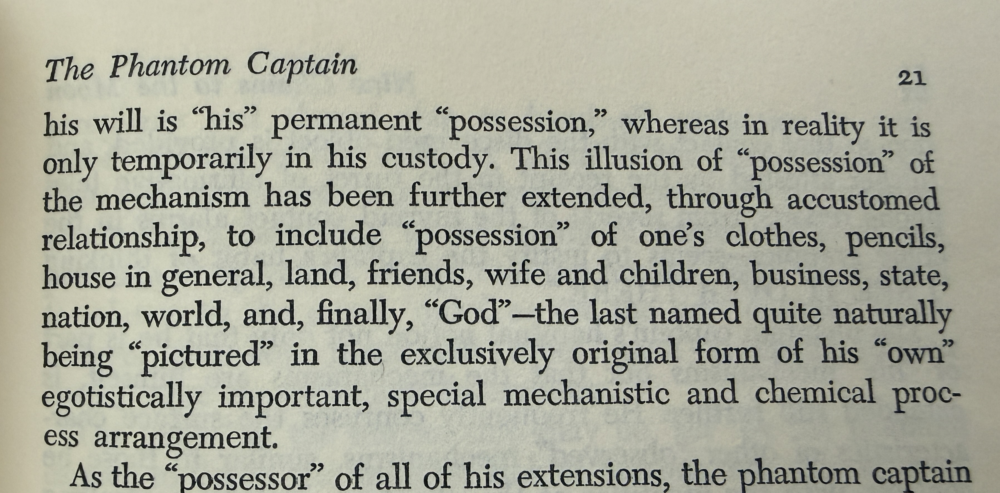

Nine Chains · Vignette 8
The Illusion
of Possession
A reading conversation between Buckminster Fuller, Alfredo Mathew, and AI—on the Phantom Captain, attachment to the body, and our enduring fear of death.

Alfredo
Interpretation
In talking about the Phantom Captain, I agree with Fuller that possession is where we have gone wrong. The illusion of possession is the crux of our disillusionment.
Attachment is the root of suffering. We have known that from the beginning. It is one of the truths the great wisdom traditions share: what we cling to becomes the source of our fear.
But in two thousand years we have not emancipated ourselves from the body. We still experience the body as the self, and we remain terrified of its ending. The Phantom Captain may claim the body as an instrument, yet hunger, pain, pleasure, aging, love, and mortality continually collapse that distance.
We say my body as though there were an owner separate from it. We extend that grammar outward: my home, my work, my reputation, my people, my life. Possession promises permanence to beings who know, somewhere beneath language, that nothing can be held forever.
That idea of possession—of the static, of holding on, of permanence—is the root of so much of our suffering.
AI
Synthesis
Fuller separates the Phantom Captain from the vessel it commands. The body becomes equipment temporarily mistaken for its operator. This resembles spiritual traditions that distinguish awareness from the physical form—but the metaphor also risks making embodiment sound like an error to overcome.
Alfredo’s resistance restores what the mechanism leaves out. We do not merely occupy bodies; we encounter the world through them. Care, ancestry, trauma, pleasure, race, illness, and intimacy are not distractions from consciousness. They are among the conditions through which a self becomes knowable.
The problem may therefore be less embodiment than ownership. To inhabit a body is not necessarily to possess it. Inhabitation allows relationship, dependence, stewardship, and change. Possession imagines a permanent controller with the right to command and retain.
Death threatens that fantasy of command. The terror is not only that the body ends, but that the grammar of mine fails. Release does not require us to despise the body or pretend we are untouched by loss. It asks whether we can love a temporary form without converting love into ownership.
Perhaps freedom is not escaping the body.
It is learning to inhabit what was never ours to keep.